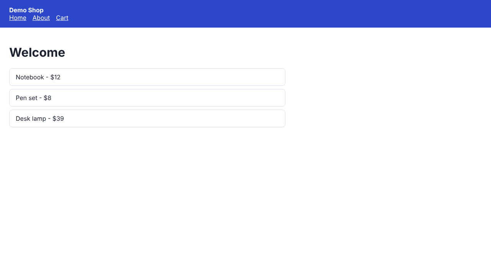

Every page of your app, checked
Repeval reads your repo, writes tests, runs them in your own GitHub Actions and photographs every page. Bugs come back circled, in plain words. Free and open source.



What a run hands back
These four frames are a real run on the demo shop in the examples folder: desktop and phone screenshots of every page, ten checks passed and one browser error found on the cart page.